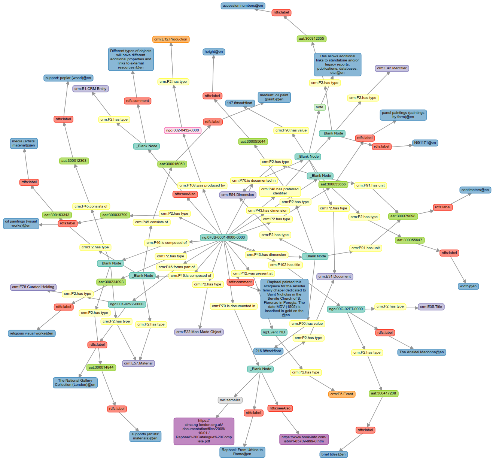

National Gallery - Simple Modelling Example
This project is based on a 'simple' copy of the simple-site repository. It has been set up to provide a dedicated example of using the system to create and display diagrams and flowcharts, initially focused on presenting modelling examples for semantic data.
Instructions
Full details and instructions relating to how the simple-site system works can be found in the simple-site project webpages.
Four example pages have been specifically provided, to demonstrate the presentation of modelling examples using this system.
Acknowledgement
This specific project was prepared and tested as part of:
The AHRC Funded IIIF - TANC project

